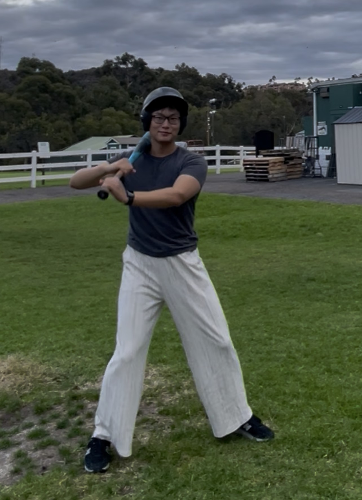
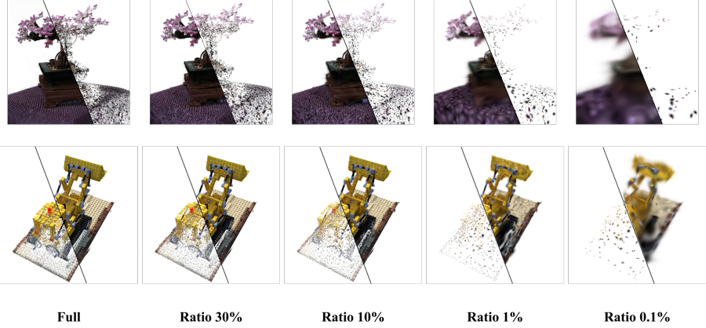
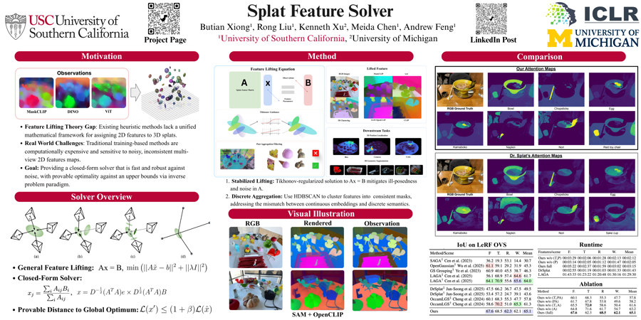
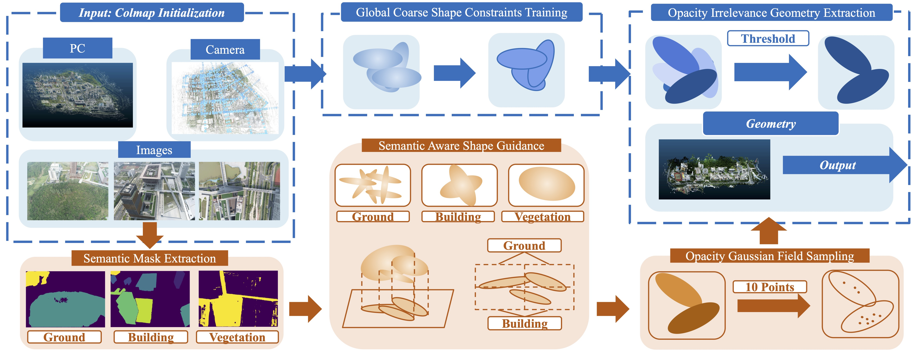
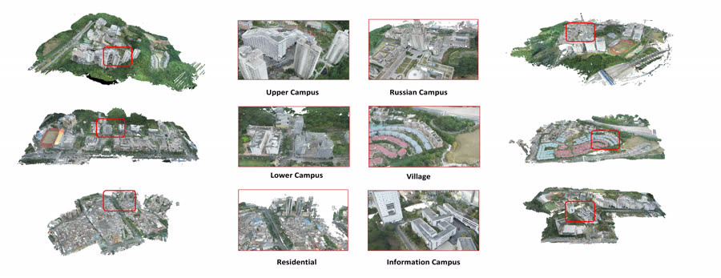
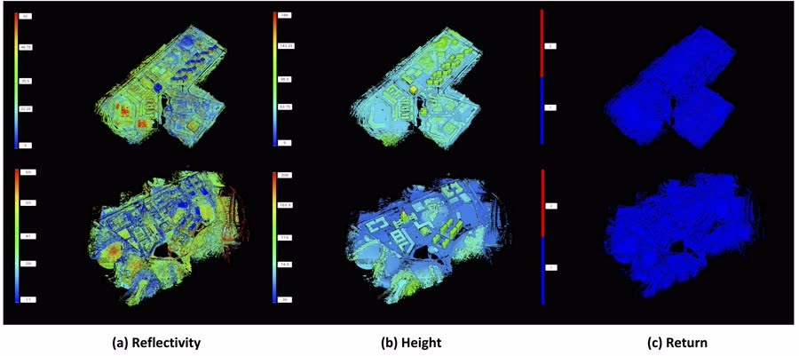

I am a Master's student in Computer Science at the University of Southern California (Viterbi School of Engineering) and a Research Assistant at USC Institute for Creative Technologies, supervised by Andrew Feng.
My research focuses on 3D scene understanding — including large-scale 3D Gaussian Splatting, semantic-aware 3D reconstruction, indoor navigation, and multimodal LiDAR–image fusion. I am passionate about building 3D perception systems that can reason about the real world at scale.
I am also currently interning at Futurewei Technologies (Huawei's US R&D arm), working on cutting-edge research in the industry. Previously, I worked as an AI Engineer at the Shenzhen Future Network Intelligence Institute and as a Research Scientist at Infused AI, collaborating with Yatong Han. I also served as a technical consultant at Auki-Labs. Earlier I was a Research Assistant at Prof. Zhen Li's DeepBit Lab (CUHK-SZ), the Geometry AI Lab (KAIST, supervised by Prof. Minhyuk Sung), the RAIL Lab (CUHK-SZ, supervised by Prof. Tin Lun Lam), and SRIBD (supervised by Prof. Liu Li).
I completed my B.S. in Computer Engineering with First Class Honors from the Chinese University of Hong Kong, Shenzhen in 2024, ranking 6th out of 103 in my major.
Viterbi School of Engineering · Los Angeles, CA
Department of Electrical Engineering · Daejeon, South Korea
School of Science and Engineering · First Class Honors · Rank 6 / 103





I co-lead a 3D scene understanding research team at Infused AI and DeepBit Lab with Dr. Xiao Yu. If you are interested in joining our research, feel free to reach out via email.
Current research assistants: Jiayue Dai, Yunya Wang, Yuetong Chen, Yihan Fang